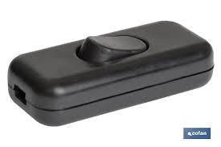
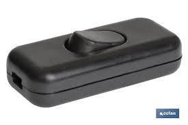
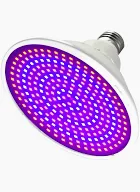
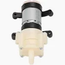
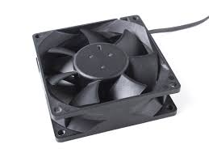

  
Bicos gotejadores
Bicos Gotejadores são emissores que distribuem, a velocidade da (95%), a água sob a forma de gota á gota.

Fonte de Alimentação
Uma fonte de alimentação é um dispositivo elétrico que fornece energia elétrica a uma carga elétrica.
Lâmpada
A lâmpada incandescente é um dispositivo elétrico que transforma energia elétrica em energia luminosa e energia térmica através do efeito Joule.
Interruptor
O Interruptor é um dispositivo extremamente útil, tendo a função de ligar ou desligar circuitos elétricos.
Lâmpada de Crescimento
A lâmpada de crescimento é um tipo de lâmpada que fornece compensação de iluminação para as plantas de estufa de acordo com a lei natural do crescimento das plantas e o princípio da fotossíntese.
Mini Bomba de Água RS385
Mini Bomba de Água Arduíno RS385 foi criada especialmente para o desenvolvimento de projetos de prototipagem.
Ventoinha
Ventoinha é um sistema de arrefecimento usado em diversos tipos de hardwares eletrônicos com o objetivo de evitar a sobrecarga.